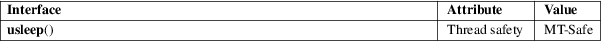

usleep − suspend execution for microsecond intervals
Standard C library (libc, −lc)
#include <unistd.h>
int usleep(useconds_t usec);
Feature Test Macro Requirements for glibc (see feature_test_macros(7)):
usleep():
Since glibc 2.12:
(_XOPEN_SOURCE >= 500) && ! (_POSIX_C_SOURCE
>= 200809L)
|| /* glibc >= 2.19: */ _DEFAULT_SOURCE
|| /* glibc <= 2.19: */ _BSD_SOURCE
Before glibc 2.12:
_BSD_SOURCE || _XOPEN_SOURCE >= 500
The usleep() function suspends execution of the calling thread for (at least) usec microseconds. The sleep may be lengthened slightly by any system activity or by the time spent processing the call or by the granularity of system timers.
The usleep() function returns 0 on success. On error, −1 is returned, with errno set to indicate the error.
|
EINTR |
Interrupted by a signal; see signal(7). | ||
|
EINVAL |
usec is greater than or equal to 1000000. (On systems where that is considered an error.) |
For an explanation of the terms used in this section, see attributes(7).

None.
4.3BSD, POSIX.1-2001. POSIX.1-2001 declares it obsolete, suggesting nanosleep(2) instead. Removed in POSIX.1-2008.
On the original BSD implementation, and before glibc 2.2.2, the return type of this function is void. The POSIX version returns int, and this is also the prototype used since glibc 2.2.2.
Only the EINVAL error return is documented by SUSv2 and POSIX.1-2001.
The interaction of this function with the SIGALRM signal, and with other timer functions such as alarm(2), sleep(3), nanosleep(2), setitimer(2), timer_create(2), timer_delete(2), timer_getoverrun(2), timer_gettime(2), timer_settime(2), ualarm(3) is unspecified.
alarm(2), getitimer(2), nanosleep(2), select(2), setitimer(2), sleep(3), ualarm(3), useconds_t(3type), time(7)